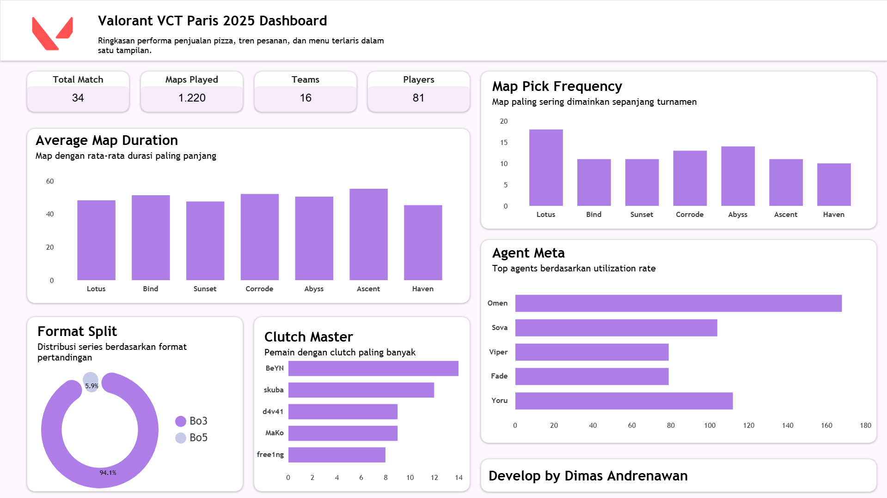

Dashboard analytics performa kompetitif turnamen e-sports VCT
Proyek ini merupakan dashboard analitik e-sports yang merangkum performa kompetitif selama turnamen VCT Paris 2025. Dashboard ini menyajikan data teknis mengenai meta permainan, frekuensi pemilihan peta, hingga statistik performa individu pemain profesional.

Pengumpulan data dari semua pertandingan VCT
Analisis character pick rates & strategis
Perhitungan individual player metrics
Visualisasi interaktif di Looker Studio
Pertandingan
Tim Profesional
Agen Character